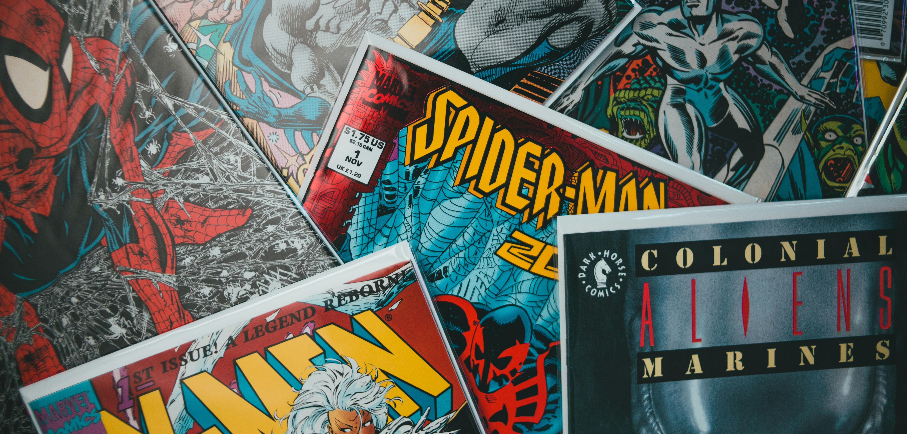
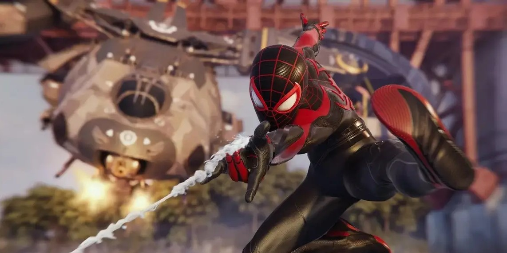
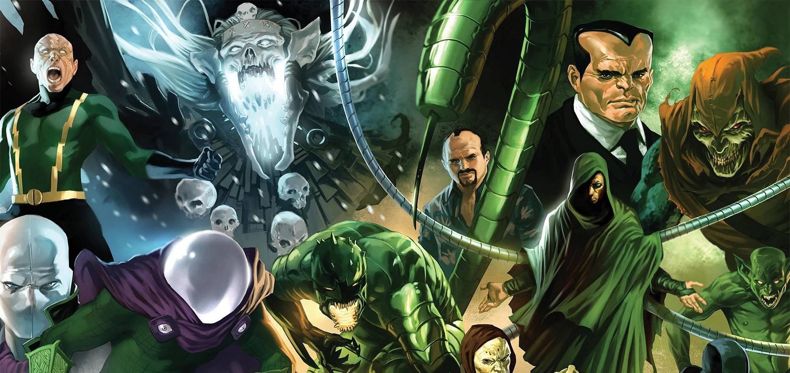
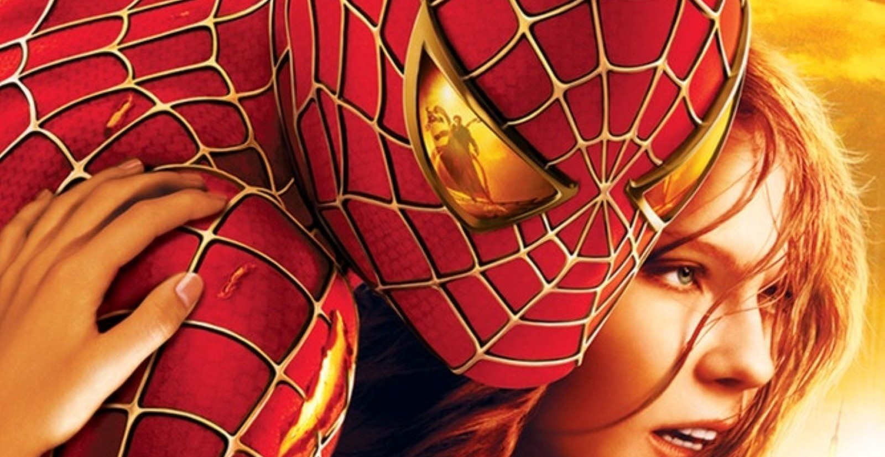
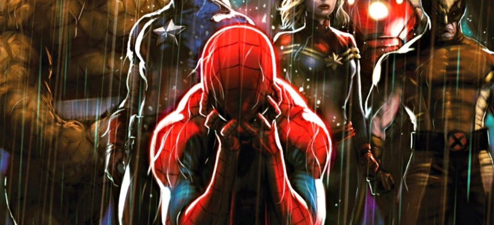
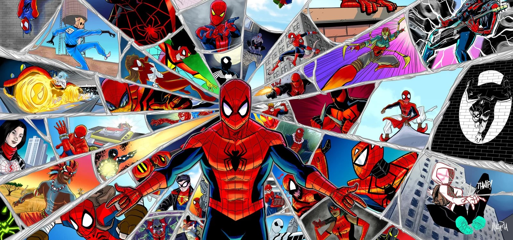
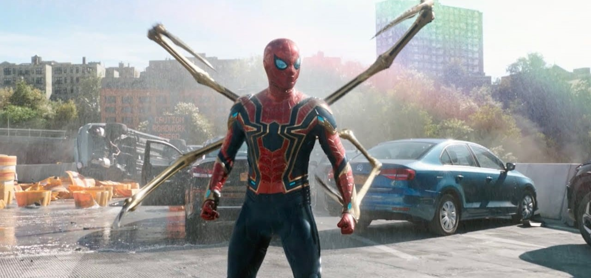
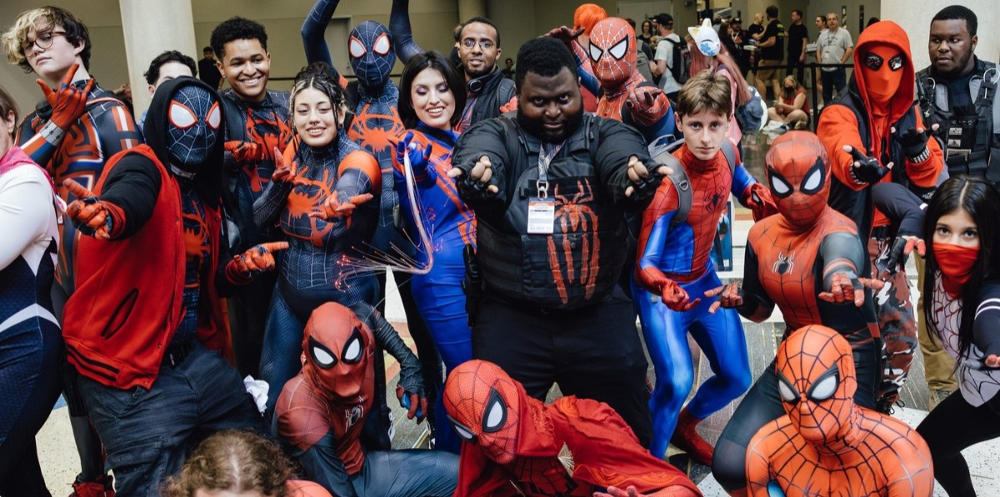
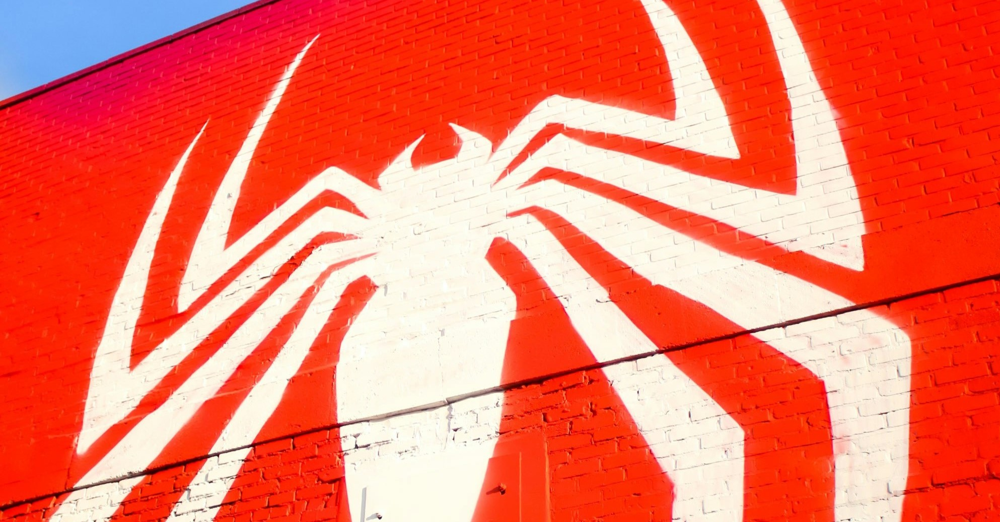

Origem do Personagem
A origem do Homem-Aranha reflete as mudanças sociais da década de 1960, quando a Marvel começou a criar personagens que abordavam problemas contemporâneos. O conceito de um adolescente que se torna um super-herói ressoou fortemente com jovens leitores. A inclusão de dilemas morais e questões emocionais nas histórias de Peter Parker marcou uma evolução significativa nos quadrinhos, tornando-os mais acessíveis e relevantes.

História de Peter Parker
Peter Parker é um dos poucos super-heróis que enfrenta verdadeiros desafios de crescimento. Ele lida com a pressão da escola, expectativas familiares e o medo da rejeição. Suas relações, como a amizade com Harry Osborn, e seu romance com Mary Jane, muitas vezes refletem suas próprias inseguranças. O ciclo de tragédia e crescimento pessoal faz dele um personagem profundamente tridimensional. A constante luta para equilibrar suas obrigações de herói com a vida cotidiana traz um realismo emocional que é central em suas narrativas.

Poderes e Habilidades
Os poderes do Homem-Aranha são frequentemente explorados de maneiras criativas. Por exemplo, sua capacidade de escalar paredes é utilizada não apenas em combate, mas também em situações cotidianas, como escapar de situações difíceis ou salvar civis. Além disso, o "sentido aranha" é uma habilidade que não apenas alerta sobre perigos, mas também o ajuda a perceber nuances em suas relações pessoais, tornando-se uma metáfora para sua intuição emocional. O fato de ele inventar teias com diferentes propriedades, como teias adesivas ou explosivas, mostra sua adaptabilidade e inteligência.

Inimigos Icônicos
Os vilões do Homem-Aranha são multifacetados e muitas vezes têm histórias trágicas que ressoam com as lutas de Peter. O Duende Verde, por exemplo, é uma personificação do lado sombrio da vida de Peter, enquanto o Doutor Octopus é um reflexo das consequências do gênio intelectual sem ética. O Venom, com sua origem complexa e a relação com Peter, explora temas de identidade e a luta interna entre o bem e o mal. Esses antagonistas não são apenas obstáculos físicos; eles representam desafios emocionais e morais que Peter deve superar.

Impacto Cultural
O Homem-Aranha se tornou um ícone cultural global, representando não apenas um super-herói, mas um símbolo de luta e esperança. A série de filmes de 2002 a 2007 de Sam Raimi teve um impacto profundo, trazendo novos fãs para o personagem e estabelecendo padrões para adaptações de quadrinhos. O aclamado "Spider-Man: Into the Spider-Verse" (2018) revolucionou a animação com sua estética única e narrativa inclusiva, celebrando a diversidade. A popularidade do Homem-Aranha se estendeu para videogames, com títulos como "Marvel's Spider-Man" (2018) trazendo novas narrativas e jogabilidade inovadora.

Temas Centrais
Os temas de responsabilidade e sacrifício são cruciais nas histórias do Homem-Aranha. Peter frequentemente se vê em situações em que deve escolher entre salvar alguém ou proteger sua identidade secreta. Essa dualidade também é explorada em histórias que envolvem o "Clone Saga" e "The Night Gwen Stacy Died", onde suas decisões têm consequências profundas. Esses temas ressoam com leitores de todas as idades, refletindo as complexidades da vida real.

Versões do Homem-Aranha
As várias versões do Homem-Aranha, como Miles Morales e Spider-Gwen, ampliam o universo do personagem, permitindo a inclusão de novas perspectivas e experiências. Miles, como um jovem afro-latino, aborda questões de identidade cultural e pertencimento. Spider-Gwen, por sua vez, subverte expectativas de gênero, mostrando que qualquer um pode ser um herói. Essas narrativas têm sido fundamentais para trazer diversidade e representação ao gênero de super-heróis.

Tecnologia e Inovações
O lado científico de Peter Parker é um aspecto vital de sua narrativa. Sua habilidade em inventar dispositivos, como as teias, mostra a importância do pensamento crítico e da inovação. Em arcos como "The Superior Spider-Man", onde Otto Octavius assume o corpo de Peter, a exploração de tecnologia e moralidade é intensificada, questionando o que significa ser um herói. O uso da ciência nas histórias de Peter também inspira leitores a considerar carreiras em STEM, refletindo uma mensagem positiva sobre educação e criatividade.

Fandom e Comunidade
O fandom do Homem-Aranha é vasto e diversificado, com comunidades dedicadas a discutir suas histórias e personagens. Convenções de quadrinhos e eventos de cultura pop celebram o legado do Homem-Aranha, com fãs vestindo trajes e participando de painéis. A interatividade nas redes sociais permite que os fãs compartilhem suas interpretações e criações, desde fan arts até histórias originais, cultivando um senso de comunidade global que fortalece a presença do Homem-Aranha na cultura contemporânea.

Legado e Futuro
O legado do Homem-Aranha é caracterizado por sua capacidade de evoluir com o tempo. As histórias continuam a abordar questões sociais relevantes, como justiça social, identidade e responsabilidade. Com novos filmes, quadrinhos e séries planejadas, o Homem-Aranha está posicionado para permanecer relevante nas discussões contemporâneas. A introdução de personagens como Silk e outros heróis do "Spider-Verse" promete expandir ainda mais seu impacto, garantindo que o legado de Peter Parker continue a inspirar futuras gerações.
